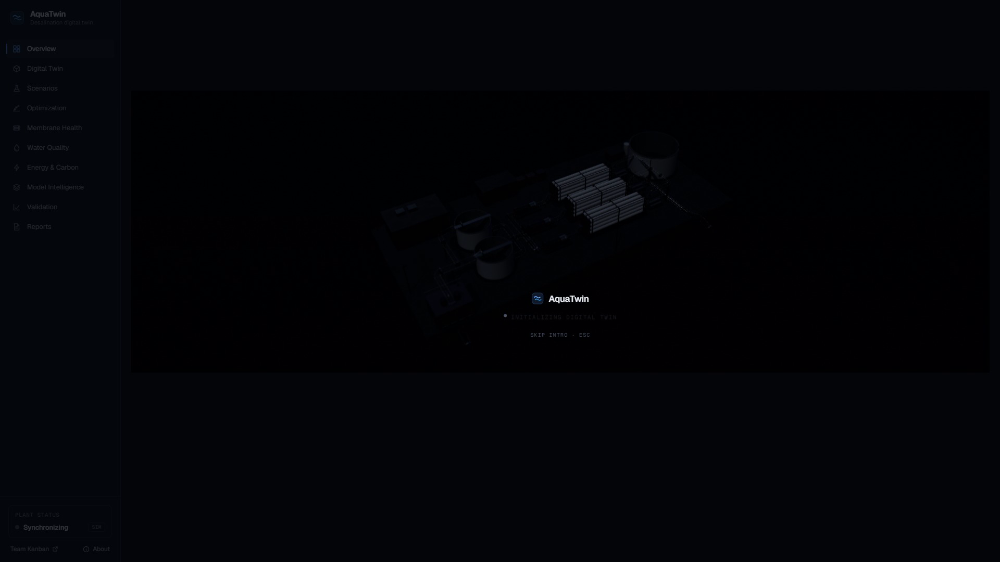

Seawater reverse osmosis · Arabian Gulf
Gulf desalination plants run on fixed setpoints and fixed alarms.
By the time an alarm fires, the plant is already reacting.
AquaTwin keeps a physics model of each reverse-osmosis train calibrated to live data,
and corrects it with machine learning.
Train 2, it tells us, is due for cleaning.
Before a salinity shock arrives, it simulates the next day.
Doing nothing breaks the water-quality limit within three hours.
AquaTwin's plan holds every constraint.
It weighs 676 strategies,
and a safety layer, AquaGuard,
checks every limit at the edge of the model's uncertainty.
And when conditions go beyond what the model has learned,
it says so, and withholds its advice.
Every result is simulated, tested against a hidden plant,
and reproducible, including where it doesn't help.
AquaTwin.
Predict. Simulate. Adapt.
Before the plant is forced to react.
Built by Team Kanban · kanbanstudios.ae/team-kanban
Research prototype · all results simulated